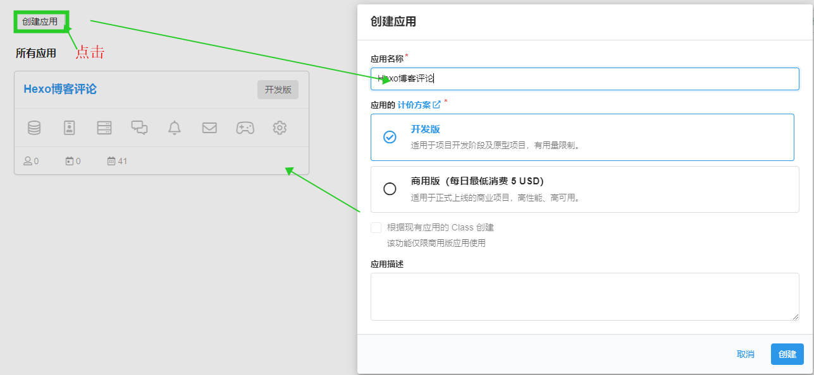
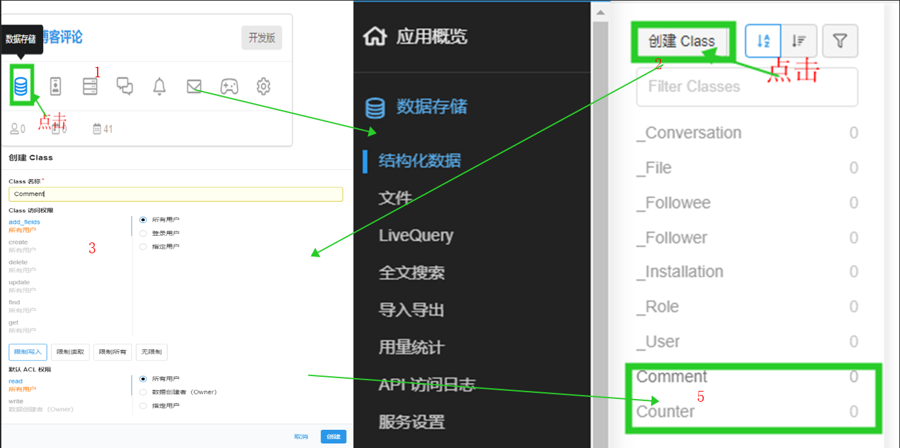
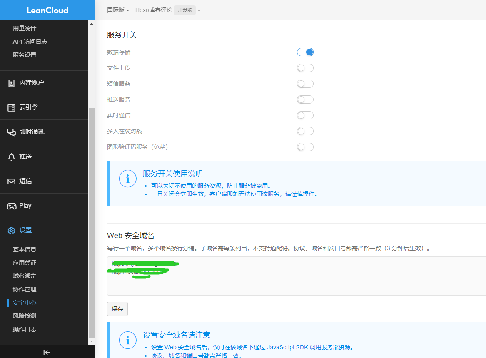
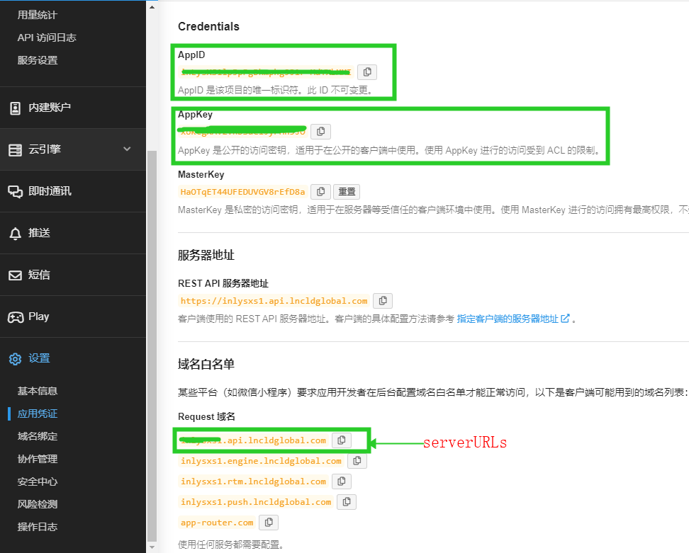
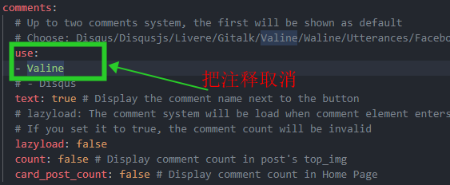
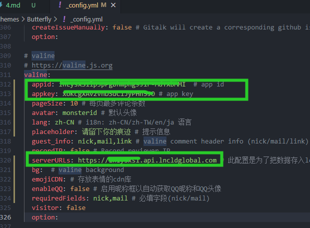
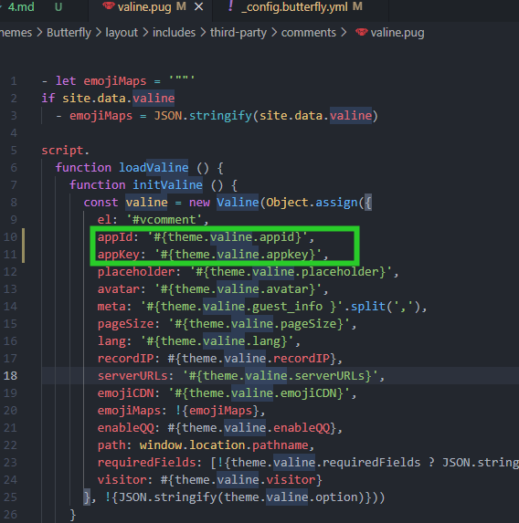
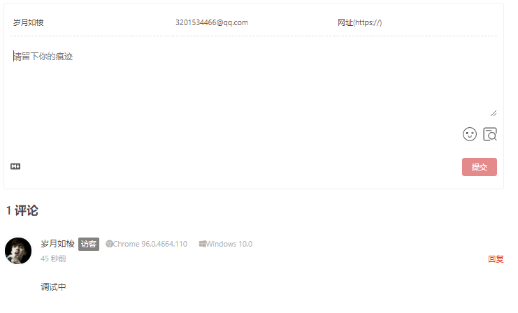

hexo之butterfly添加valine评论系统
leanCloud官网 https://www.leancloud.cn/
一.注册LeanCloud,获取AppID,AppKey
1.注册完成后，创建应用

2.创建Comment,Counter,权限设为所有用户

3.绑定web安全域名，关闭除数据存储所有服务

4.获取AppID,AppKey,serverURLs

二.butterfly主题中配置valine
1.进入主题中_config.yml,找到comments,取消valine注释

2.找到valine,配置其中appid,appkey,serverURLs

3.进入主题中butterfly/layout/third-party/comments/valine.pug目录中,让其中appid和appkey与前面修改变量一致。

三.测试valine评论
1 | hexo clean |

本博客所有文章除特别声明外，均采用 CC BY-NC-SA 4.0 许可协议。转载请注明来自 一叶知秋！


评论